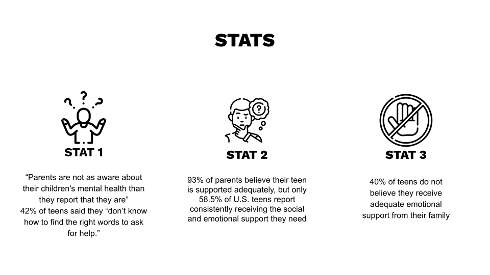

Role 01
Strategist
Led an individual team of five, conducted primary and secondary research, and discovered a key tension for the campaign: there is an unaddressed disunity between the support youth believe they are getting and the support they desire.
This helped form the basis for developing the rest of our strategy around the principle of disunity.

.001.jpeg)